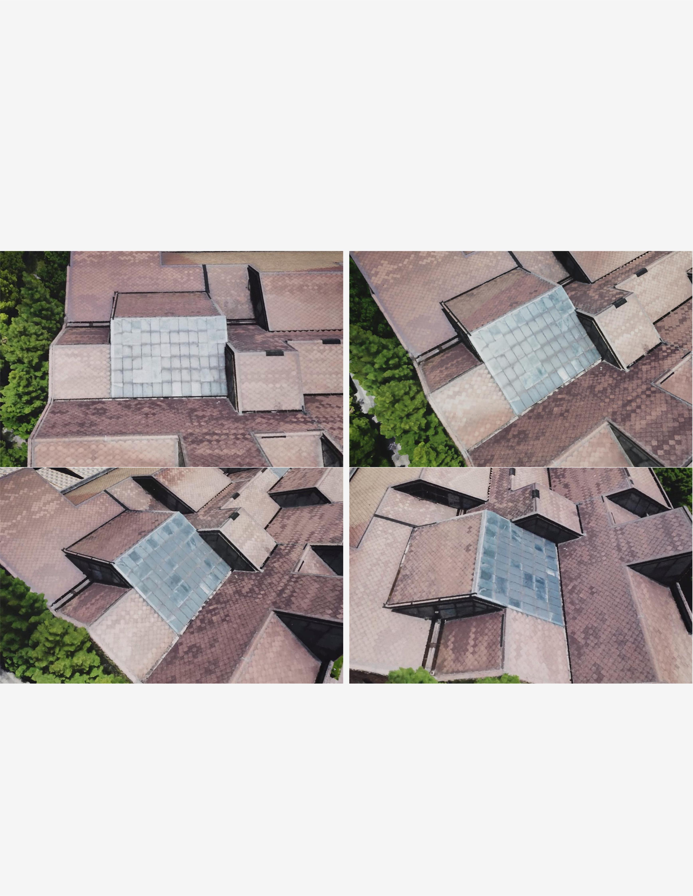

Transparency and specular reflection effects

Image demonstration

We visually compare our proposed technique with recently implemented real-time rendering NeRF models and Mip-NeRF. All these methods are implemented within nerfstudio. It is evident that UE4-NeRF yields the best reconstruction for all the four scenes.

(a) Large-scale scenes characterized by complex textures and significant height differences are captured with monocular or multi-camera drone footage. We divide scene into multiple individual sub-NeRFs. (b) Real-time interactive rendering in UE4 with distinct levels of detail, along with frame rate disparities among them. (c) Defferent editing capabilities on the scenes.

Five large-scale scenes rendered in real-time using UE4-NeRF. We captured five scenes with different textures and complex terrains using a drone.
BibTeX